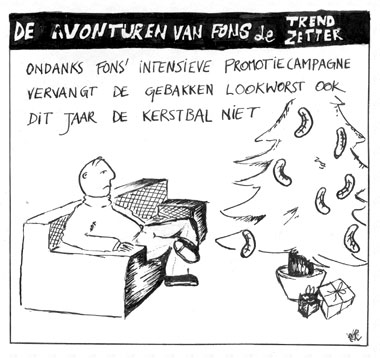

Wouter nr.1
zondag 28 september 2003 | Zomaar
Het is me een groot genoegen om jullie tijdens de komende maanden een aantal cartoons voor te stellen van ex-collega-student Wouter Viane. Tijdens onze opleiding journalistiek kwam hij zo nu en dan met een tekening op de proppen om de gaten tussen onze schrijfels te vullen. Ik kon er toen hartelijk om lachen, en vandaag nog altijd. Daarom leek het me een interessant idee om ze een internet-doop te geven via deze blog. Tijdens de Gentse Feesten tussen twee pinten afgesproken, vandaag ten uitvoer gebracht. In willekeurige volgorde, hier komen ze…
Reeks één: 001 – 002 – 003 – 004 – 005
